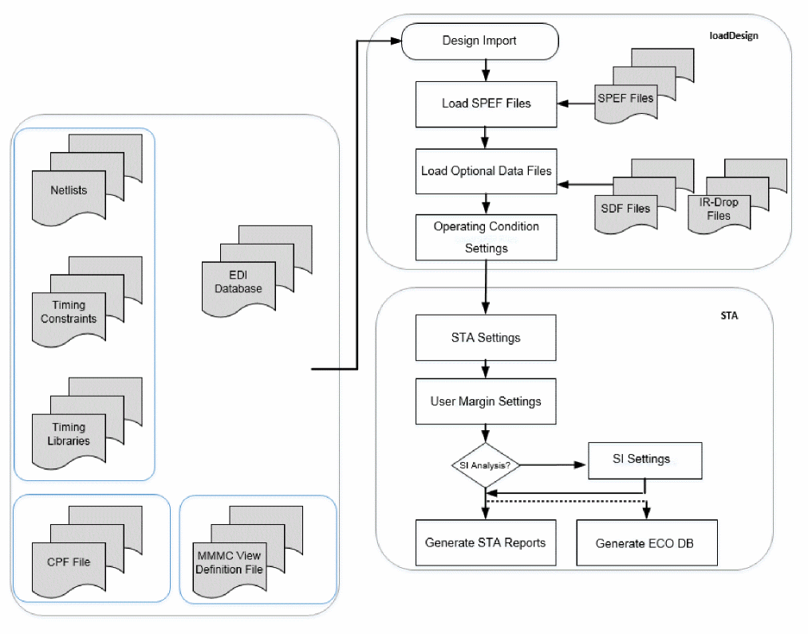
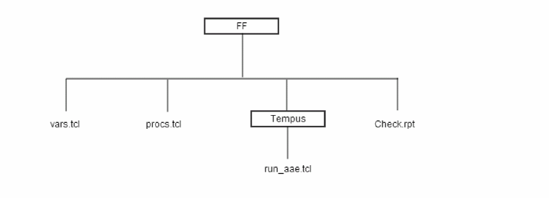

Running Timing Analysis Using Foundation Flow
Tempus Foundation Flow supports the timing analysis. To run the timing analysis flow, ensure that the following details are available:
- Design Netlist –Verilog
- Timing Constraint files (SDCs)
-
Timing libraries (
.libs)Parasitic data (SPEF files) - MMMC view definition or CPF file
Optional Inputs
-
SI libraries (
.cdBfor glitch analysis) - Base/Incr Delay Annotation file(s)
- Instance-based IR-drop Information file(s)
- TWF file(s)
Flow Chart
The figure below illustrates the timing analysis flow.
Figure -1 The Timing Analysis Flow

Sample of Generated Code
Once you source
Figure -2 The Foundation Flow Directory Structure

Sample Script for Single View Non-MMMC flow
# variable and procedure define
source FF/vars.tcl source FF/procs.tcl # design import part read_lib -cdb *.cdb read_lib *.lib read_verilog *.v.gz set_top_module top read_sdc *.sdc set aocv_flow false read_spef *.spef
# STA + SI settings
set_global report_timing_format {instance arc cell load slew delay incr_delay arrival}
set_global timing_case_analysis_for_icg_propagation true
set_global timing_report_unconstrained_paths true
set_global timing_report_group_based_mode true
set_global timing_cppr_threshold_ps 10
set_global report_precision 4
set_delay_cal_mode -siAware true -siMode signoff -engine aae
set_si_mode -delta_delay_threshold 20e-12
set_si_mode -individual_attacker_threshold 0.02
set_si_mode -num_si_iteration 2
set_si_mode -accumulated_small_attacker_mode current
report_timing_derate
set_propagated_clock [all_clocks]
# STA report
report_timing
report_analysis_coverage > rpt/report_analysis_coverage.rpt.gz
check_timing -type endpoints -verbose > rpt/uncons_endpoint.rpt.gz
check_timing -type inputs -verbose > rpt/uncons_inputs.rpt.gz
check_timing -type clocks -verbose > rpt/uncons_clocks.rpt.gz
report_constraint -all_violators -late > rpt/constraint_maxdly.rpt.gz
report_constraint -all_violators -early > rpt/constraint_mindly.rpt.gz
report_constraint -all_violators \
-drv_violation_type max_transition > rpt/constraint_maxtran.rpt.gz
report_constraint -all_violators \
-drv_violation_type max_capacitance > rpt/constraint_maxcap.rpt.gz
report_constraint -all_violators \
-drv_violation_type max_fanout > rpt/constraint_maxfanout.rpt.gz
report_timing -max_paths 500 \
-late \
-path_type full_clock \
-net > rpt/setup.rpt.gz
report_timing -max_paths 500 \
-early \
-path_type full_clock \
-net > rpt/hold.rpt.gz
save_design ./dbs/dtmf_recvr_core.enc -overwrite
write_sdf -interconn noport \
-splitrecrem \
-splitsetuphold rpt/dtmf_recvr_core.3.0.sdf.gz
Sample of Predefined Code
Generated code only has valid Tempus commands based on the input settings of
if {[info exists vars(load_edi_db)] && $vars(load_edi_db)} {
set EDI_DB true
if $vars(physical_data) {
if {[info exists vars(edi_oa_name)]} {
read_design -physical_data -cellview $vars(edi_oa_name)
} else {
read_design -physical_data $vars(edi_db_name)
}
} else {
…
source $vars(script_root)/ETC/TEMPUS/loadDesign.tcl
source $vars(script_root)/ETC/TEMPUS/sta.tcl
Return to top